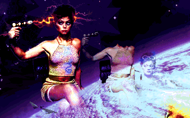
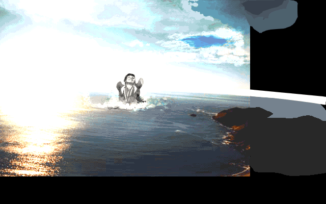
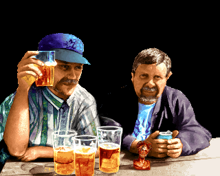
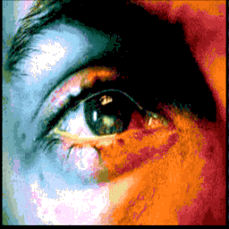
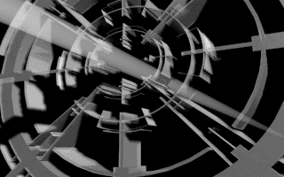
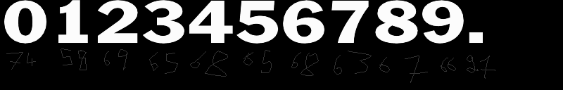

The Secret Life of Mr. Black by Orange:
code Hoplite, music Dune (KUSI.IT), graphics Der Piipo,
animation Frank (credits as listed in README.md).
DEMO.EXE is an MZ stub + PMODE/W 1.20 + an uncompressed LE
image (Watcom C glue + hand-written asm effects); music is an Impulse
Tracker module played by Indoor Music System 0.6; all art lives in one
container, PETTERI. Duration 183.3 s, 13 scenes. Everything
below was read from the disassembly (re/obj1.dis) and
checked against the JavaScript port in web/fx/; "bit-exact"
always means "0 differing pixels / DAC bytes against the Unicorn oracle
over the frames the oracle recorded" (see section 5 for what that does
and does not cover).
fldcw of the C runtime).
All maths is 32-bit integer fixed point with a 4096-entry sine
table shipped precomputed in the data object
(0x206b68, 10-bit amplitude, values -1023..1023, peak at
index 1025; cos(i) = T[i + 0x401], which is why every port
does T[i + 0x401]; the table has 1026 extra entries after
the 4096 so the +0x401 never wraps).dword [0x200ab9], 65536 units per second of
the IMS timer) and, for some, row and order.| scene (port) | orders | start (s, oracle clock) | frame fn | what you see | seek class |
|---|---|---|---|---|---|
| fx00 intro | 0-1 | 0 | 0x10275f | noisy blue/white picture fading in, 320x400 | replay from 0 |
| fx01 eye warp + cards | 2-3 | 14.45 | 0x103d67 | warped eye picture, flashing photo cards, credits | pure f(w,order,row) |
| fx02 green rings | 4-5 | 28.76 | 0x102ce6 | blob rings with feedback | replay from scene start |
| fx03 particle cloud | 6-7 | 43.12 | 0x100b9c | white particle cloud + barcode strip | replay |
| fx04 particle ring | 8-9 | 57.38 | 0x1010e8 | red/orange ring around a dark hole | replay |
| fx05 spiral + pi | 10-11 | 71.71 | 0x10314d | blob spiral, scrolling digits of pi | replay |
| fx06 light trails | 12-14 | 86.05 | 0x101834 | swirling trail "flowers" | checkpoints every 25 calls |
| fx07 picture | 15 | 107.48 | none | still picture cncd.scx |
static |
| fx08 photo + ghost | 16-17 | 114.61 | 0x103807 | panned photo, ghost silhouette fading in | pure f(t) |
| fx09 wire-frame room | 18-19 | 128.97 | 0x1054bf | rotating wire-frame room over a picture | pure f(t) |
| fx10 eye zoom | 20-21 | 143.29 | 0x105960 | zoomed/warped eye, fade | pure f(t) |
| fx11 starburst | 22-23 | 157.60 | 0x101d10 | white starburst with colour trails | checkpoints |
| fx12 blur dots | 24-25 | 171.92 | 0x106263 | 645 dots blur-fading, final fade | replay |
(Start times are the order-change clocks of the Unicorn run,
web/timetable.js; the original ends with
int 21h/4Ch at 183.3 s.)
Time and angles. Every effect turns the time word
w into angle indices with
(w * k) >> 10 & 0xfff
(imul eax,eax,k; sar eax,0xa; and eax,0xfff); the
multipliers k are the per-effect "speeds" (e.g. scene 3: 6,
5, 7 for the offsets, 14, 11, -29 for the global rotation). Scene 6 and
11 count w down.
Rotation by table. One rotation of a point
(a, b) by index i:
const s = T[i], c = T[i + 0x401];
a2 = (a * c - b * s) >> 10; b2 = (b * c + a * s) >> 10; // 32-bit wrap like the CPU (Math.imul)The splat. A particle is a 12-pixel star added into
a byte buffer (0x100856, 0x1015de): each of 12
offsets gets +4 or +8 (+2/+4 in
the second variant) only while the byte is below a limit
(0x37, resp. 0x3b), so the buffer never
overflows into the neighbour byte when read as dwords later.
const SPL = [1,4, 2,4, 0x140,4, 0x141,8, 0x142,8, 0x143,4, 0x280,4, 0x281,8, 0x282,8, 0x283,4, 0x3c1,4, 0x3c2,4];
if (b[o] < lim) b[o] += inc; // per pixel, from web/fx/cloud.jsThe blur. The feedback blur is done on four pixels
at a time: ((l + r + u + d) >> 2 & 0x3f3f3f3f),
then subtract a shifted copy (decay) and mask again. It is only correct
because every byte stays <= 0x3f (so the dword adds never carry
between pixels); the splat limit guarantees it. See the asm
write-up.
Shown frame = table lookup. Scenes 4, 6, 11 show
tab[(buffer << 8) | picture] where tab
is a 16 KB .shd table: the buffer value (0..0x3f) selects a
row, the background picture pixel the column. So the glow is "lighting"
of a photo through a precomputed palette-index table, and no RGB
arithmetic exists in the demo.
pallo64.aniThe frame function builds 4000 noise bytes with a 3-instruction LFSR
(ebp = rol(ebp + 0x9d, 11) ^ 0x9d, byte =
(ebp & 255) * fade >> 8), saturating-adds them to
an 80x50 window of pallo64.ani (64 frames
of 4000 bytes; the window moves by 4000 every 6144 time units, wrapping
at 0x3e800 = 256000, but this branch never fires in the oracle, see
section 5), >>2, and enlarges 2x2 into a 160-wide buffer with
averaged in-between pixels. The palette is
base * (256 - fade) >> 8, fade from a
256-entry table indexed by order*64+row (it is 0 from about 2 s to 8 s,
which is why the picture is static there: the noise is zero, the player
is not stuck). The 160x98 buffer is then expanded into four VGA
planes (unchained 320x400, map mask via port 3c4h) with a
brightness ramp x, x - x/4,
x - x/4 + x/8, x - x/4 + x/8 on the four
lines, and the page flip is a CRTC start-address write.
Bit-exact: 503 frames, 0 pixel and 0 palette differences,
given the recorded per-frame inputs
(web/assets/intro_frames.json, taken from the oracle).
fx01.js)A plane is rotated by three chained rotations (angles from
w), the three corners P0, P1, P2 are rotated,
and a 41x26 grid of (u, v, shade) records is walked by
adding per-column and per-row 3D steps. The depth of every grid point is
displaced by a sum of five sines (wave), clamped to |z| >= 0x1000,
the perspective is 0x800000 / z, and u, v come out as
x * k >> 8 plus a time offset. Each of the
40x25 cells (8x8 pixels) is then filled with
second-order interpolation of u and v (the row step of the x step is
itself stepped, ddu) and linear shade, and every pixel is
shade_table[shade][texture[v][u]].
ua = im(x, k) >> 8; va = im(y, k) >> 8; // k = 0x800000 / ec (cdq; idiv)
dux += ddu; U += dul; Sh += dsy; // per scanline of a cell
scr[o + x] = shade[(s >> 8 & 255) << 8 | tex[(v >> 8 & 255) << 8 | (u >> 8 & 255)]];On top, six overlay cells (64000 bytes each)
selected by a 128-entry timeline (order*64+row) are applied
as scr = shade[(overlay >> 2) << 8 | scr]: one
is a flat 127 (darken to black), the other five are the photo cards
wife, son, daugh, andi, all (section 4). The DAC is the
source palette times fade
(min(w >> 8, 0x100), then
(0x40 - row) * 8 from order 3 row 0x20, 0 in order 4).
Bit-exact: 334 frames, 0 diffs, given the original's own
(w, order, row) per call. It is a pure function of those
three, so seek is free; in the player w and the row come
from the music clock. Texture and palette are those of
zrva.scx (verified, section 4): the eye of scenes
1 and 10 is the same 256x256 picture.
fx02.js + blob.js)Per call: update 12 parameters from the previous call's time
word (0x10300a), then 256 additive, saturating
blits of a 32x32 blob into buffer A. Blob n sits
at
(sin(i)*0x64/1024 * r >> 11 + 0x90, cos(i)*0x50/1024 * r >> 11 + 0x54),
i advances 0x30 per blob and r is a sum of two
sines (so the 256 blobs trace a wobbling ellipse of 100x80 half-axes:
the "rings"). The blob itself is generated at init
(0x102c16):
63 - (min(x^2 + y^2, 127) >> 1) for x, y in -16..15,
a radial cone. The shown frame is A/2 + tahta.raw
(saturating), then A is downscaled by taking every second
pixel/row, halved, and tiled 2x2 into B, and A/B swap: the
picture feeds back on itself at half size, which produces the receding
rings. DAC = pal * fade[row] >> 8.
Bit-exact: 201 frames incl. DAC, given the original's
time word per call; the player replays from the scene start
with the oracle's mean call spacing (4682.3 units), so frame
times are approximate.
fx03.js, cloud.js)Up to 2048 points from a table of uniform coordinates
(-0x7fff..0x8000, filled at init 0x100ab2 by the same
add/rol/xor LFSR with rol 10) are rotated by six chained
rotations: three whose angle depends on the distance to the
rotation axis (a twist: d = (x+o)^2 + y^2 >> 19,
clamped to 0x1000,
e = ((0x1000 - d)^2 >> 11)^2 >> 11, angle =
e * sine >> 15), then three global ones from
w. Perspective with cdq; shl eax,15; idiv ecx
(the shift drops the high bits for |v| >= 65536; the port emulates
this), x scaled by 5/4, splat at
(+0x9f80 >> 8, +0x6380 >> 8), number of points
min(0x800, w*32 >> 10 + 1) (the cloud grows). Then
blur (decay >> 2) and swap. Output = buffer +
koodi.raw as a dword add with carries
(deliberate or tolerated, bytes cross-talk), with a palette driven by
three sines ((T[i] + 0x4400) * e >> 13, clamped
0x3f). Bit-exact 521 frames given (w, order, row); player:
calls DT = 1793.2 units apart.
fx04.js)Same cloud, but the points are first shifted by w * 0x80
(with 16-bit wrap), the depth gets
+ (x^2 + y^2) >> 14 plus an offset that drifts in
order 9 from row 0x30, giving the ring and the dark hole. Output
tab[(buffer << 8) | picture] with
kuva.shd / kuva.scx (red/orange palette from
the picture). Bit-exact, 502 frames (a first attempt differed
on 105 pixels because the 16-bit wrap was skipped when
w*0x80 was exactly 0; fixed).
fx05.js)Same blob blitter as 3.2, but the radius shrinks by 4 per blob
(spiral), the shown frame is A/2 and, for rows 90..159, a
scroller is added. The scroller (0x103542)
copies glyph columns from the font strip f1.raw (800 bytes
per row, 64 rows used) into a 384x64 strip buffer; glyph widths and the
text (digits of pi) are tables in the data object; the position
accumulates w >> 14 per call. The feedback is
downscaled bottom-up with /2 - /2/32 (slight decay).
Bit-exact 201 frames given (w, row); the first blob of every
call uses raw unmasked table indices that can point below the sine
table, so the data object dumped at the first call is used: verified
only over this run.
fx06.js +
trail.js)64 passes x 64 points per frame, each point's three angles from an
LCG restarted at 0x5c23 every pass (so every pass draws the
same shape, rotated differently), three rotations by those
angles then three by pass angles built from the previous frame's state
(sines of w*{1,-3,2} >> 10 and accumulators of
w - previous w), perspective with shl 16,
splat 0x1015de (limit 0x3b), blur with decay
>> 3, output through
kuva2.shd/kuva2.scx. Because the state
accumulates, the port keeps checkpoints every 25 calls.
Bit-exact 750 frames.
fx07.js)No frame function at all: init 0x10095e sets mode 13h,
loads cncd.scx, writes its 6-bit palette to the DAC and
copies 64000 bytes to VRAM. Matches golden t0110
exactly.
fx08.js)A 640x400 photo (k1.scx) is shown
through a 320x200 window panned by sines
(x = ((S[a]+S[b]+S[c]+S[d])>>2 + 0x400) * 0xab >> 11,
y = (...) * 0x91 >> 11 + 0x32). A 320x256
ghost picture (k2.scx pixels) is blended
over it at y0 + 10 + (cos(t >> 8) >> 4) through
a 5-bit mask (alffa.raw >> 3, a
silhouette of two men): per pixel
T2[T1[(32-m)*256 + bg] * 256 + T1[m*256 + g]], i.e. a
cross-fade done with two 16 KB tables and a 64 KB one, no
multiplications. Bit-exact, 556 frames, pure function of
t.
fx09.js)96 vertices and 96 edges (static tables in the data object,
0x214b22, 0x215422) are rotated by three
angles (3t, 2t, 7t >> 10), x and y doubled, z offset
t >> 10, edges sorted by z, clipped against z = 1 and
drawn by a Chebyshev line routine (n = max(|dx|, |dy|) >> 8 steps)
that splats the same 12-pixel star as the particle
scenes into a line buffer (cleared each frame); output
T[(line << 8) | picture] with the kuva3
table/picture. Bit-exact 501 frames given t; pure
function of t.
fx10.js)A 81x51 grid of warped texture coordinates over the
256x256 zrva.scx: two radial bulges at (0x5000, 0x3200) and
(0xf000, 0x9600) (strength (1 - r^2/256)^8 by three
squarings in 8.8 fixed point), rotation by an angle from four sine
phases, scale amp = min(0x10000, 64t >> 10). Each
4x4 cell is filled by bilinear-ish stepping between its
four grid corners and the pixel is a straight
tex[y>>8 & 255][x>>8 & 255] read. The
fade from order 21 row 32 telescopes:
level = max(0, 0x40000 - (w - 701391)), DAC =
pal * (level >> 10) >> 8. Bit-exact
501 frames incl. DAC, pure function of t (the constant
701391 comes from the oracle).
fx11.js)Same engine as 3.6 with 64 passes x 128 points, LCG seed 1, radius
(0x1000 + sum k^2) >> 5, perspective
shl 8, blur decay >> 2,
kuva3 table. The last ~0.1 s runs into order 24: the DAC
becomes pal * f >> 8 with
f = table[row] + ((sine[(w>>7) & 0xfff] - 0x400) >> 5),
clamped at 0. Bit-exact 334 frames incl. that fade (verified
with a second oracle run to 172 s).
fx12.js)Each call blurs buffer A into B with raw unaligned dword adds
that carry across bytes
([-4] + [+4] + [-0x500] + [+0x500], i.e. neighbours at +-1
pixel and +-4 rows), >> 2, minus a shifted copy; then
645 dots
(x, -y) * (0x2000 - min(0x2000, w >> 7)) >> 12 + (160, 100)
each add one of 16 cycling 16x16 sprites (dword adds, with carry); the
dots converge to the centre as w grows. In order 25 the
palette follows fade[row]. Bit-exact 795 frames
incl. DAC given (w, row, order); the fade row in order 25 is derived
from time in the player (+-1 call).
Everything lives in PETTERI (1.7 MB, no
compression): u32 count (23), then 23 x
{char name[12]; u32 offset} (offsets relative to the end of
the directory at 0x174), files back to back. DEMO.EXE opens
it once and finds files by comparing the 12-byte name
(0x100231). re/petteri.py unpacks it to
re/assets/ and renders previews. The EXE also holds the
name anim176.ani (0x20f2c6) but no
such file exists in PETTERI. Previews are in figures/;
palettes are 6-bit VGA DAC values (the port scales
v*255/63), grey previews of the palette-less
.raw files are stretched to full range and are not
in their real colours.
.scx: "RIX3", u16 w, u16 h,
flag 0xaf, 768-byte palette at +10, w*h pixels at +778)| file | size | colours actually used | used by | preview |
|---|---|---|---|---|
cncd.scx |
320x200 | 251 | scene 7 (picture, order 15) |  |
k1.scx |
640x400 | 119 | scene 8, the panned photo |  |
k2.scx |
320x256 | 250 | scene 8, the ghost (same palette as k1) |  |
kuva.scx |
320x200 | 237 | scene 4 background | |
kuva2.scx |
320x200 | 218 | scene 6 background | |
kuva3.scx |
320x200 | 230 | scenes 9 and 11 background (verified: scene 9's picture, table and palette are exactly kuva3) | |
zrva.scx |
256x256 | 232 | scenes 1 and 10 (texture and palette identical in both ports' data) |  |
Note: re/NOTES.md attributes scene 1's eye to
k1.scx; the data exported for scene 1 shows the texture is
zrva.scx (compared byte for byte), and k1.scx
is the scene 8 photo.
.raw, no palette: the palette
comes from the scene)| file | size | distinct values | role | preview |
|---|---|---|---|---|
wife.raw, son.raw, daugh.raw,
andi.raw, all.raw |
320x200 each | 14, 14, 16, 15, 15 (up to 255) | the five photo/title cards of scene 1, byte-identical to the overlay cells (value >> 2 indexes the shade table) | |
koodi.raw |
320x200 | 5 (0..7) | barcode strip added in scene 3 | |
tahta.raw |
320x200 | 53 (max 58) | scene 2's background (verified: the "kk" table in the port is this file) |  |
alffa.raw |
320x256 | 16 (multiples of 17) | scene 8 ghost mask, loaded with >> 3
(0x1037bb loop, 0x14000 bytes) |
|
f1.raw |
800x128 | 24 | scene 5 font: top 64 rows are the digits 0123456789.,
bottom half is faint handwriting not read by the scroller |
 |
The photo cards are drawn in 15-16 grey levels and "MY WIFE is a man," style captions; the demo never needs colour for them because the shade table maps (level, pixel) to a palette index.
*.shd (16384 bytes = 64 rows x 256):
kuva.shd, kuva2.shd, kuva3.shd,
zrva.shd, kk.shd. Row = brightness 0..63,
column = source palette index. In scene 1 the first 16 KB of the 64 KB
shade table equal zrva.shd.kk.mix (65536): a 256x256 table (246 distinct values),
kk.shd is a 16 KB table with 246 distinct values; their
exact consumers were not traced here.pallo64.ani (256000 = 64 frames of 80x50 bytes, 256
distinct values): the intro's light/noise source (offset step 4000, wrap
0x3e800, from the code).63 - (min(x^2+y^2,127) >> 1)) of scenes 2 and 5, the
2048 uniform point table (LCG at init 0x100ab2), and the
sine table (stored in the data object).There are no mesh files. PETTERI
contains no 3D data and the EXE has no object loader. The only
"geometry" is: the wire-frame room (96 vertices x 3
int32 and 96 edges x 2 int32 in the data object, exported to
web/assets/s18.bin), the 8x8-pixel cells of
grids (scene 1: 41x26, scene 10: 81x51) built procedurally, and
the procedural point clouds (scenes 3, 4, 6, 11). The
6-bit palettes of every scene come from the .scx pictures,
except the intro (768 bytes at 0x20f2ea,
web/assets/intro_pal.bin) and the sine-driven palette of
scene 3.
w downwards in the original; the
port reproduces that.